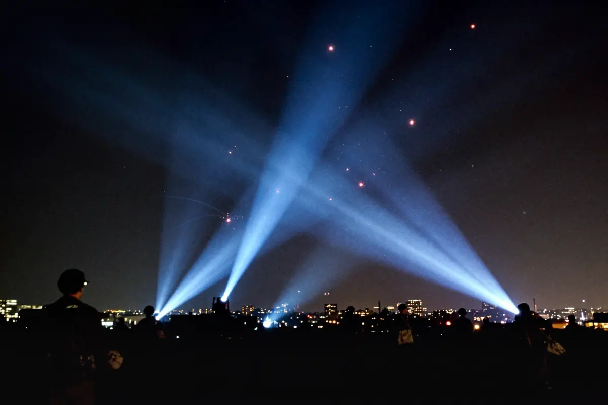

The Battle of Los Angeles: Did UFOs Attack in 1942?

The night sky over Los Angeles lit up with searchlights and explosions on February 25, 1942.
Imagine waking up in the middle of the night to air raid sirens screaming. You look outside and see giant searchlights sweeping across the sky and explosions everywhere. The military is firing at something... but what?
This really happened in Los Angeles on February 25, 1942. For hours, the U.S. military battled a mysterious object in the sky. But to this day, nobody knows for sure what they were shooting at.
Overview
A City on Edge
It was just a few months after Pearl Harbor. America had entered World War II, and everyone on the West Coast was terrified of a Japanese attack. Air raid drills happened regularly. People covered their windows at night so enemy planes couldn't find targets.
At 2:25 AM on February 25, air raid sirens began wailing across Los Angeles. The city went into total blackout. Searchlights turned on and began sweeping the sky. Something was up there.

Anti-aircraft guns fired over 1,400 rounds at the mysterious object in the sky!
💥 The Numbers Are Shocking
The military fired over 1,400 anti-aircraft shells into the sky that night. The barrage lasted for more than an hour. Yet somehow, nothing was ever shot down!
What Did People See?
Thousands of people watched the spectacle from their homes and rooftops. Witnesses described seeing:
- 🔍 A large object moving slowly across the sky
- 💡 Something that glowed or reflected the searchlights
- ✈️ Some reported seeing a formation of aircraft
- 🛸 Others claimed it was one giant object
The object (or objects) seemed to take direct hits from anti-aircraft fire but kept moving. Shells exploded all around it, but nothing fell from the sky.
Evidence
Historical work on The Battle of Los Angeles is strongest when primary records, material traces, and later peer-reviewed analysis point in the same direction. This layered approach helps separate observations from retellings and reduces the risk of repeating popular but unsupported claims.
The Next Morning

Newspapers across the country ran dramatic headlines about the mysterious battle.
When dawn broke, the all-clear signal finally sounded. The damage assessment was strange:
- 🏠 Several buildings were damaged by falling shrapnel
- 🚗 Cars were hit by debris
- 😢 Five people died - but from heart attacks and car accidents, not the attack itself
- 🛸 No enemy aircraft were found. No wreckage. No bodies.
📰 What Did the Newspapers Say?
The next day, newspapers couldn't agree on what happened. Some said it was a Japanese raid. Others said it was a false alarm. A few even suggested it might have been extraterrestrial!
Competing Explanations
Competing explanations usually persist because each one fits part of the evidence while missing another part. Researchers test these models against chronology, physical constraints, and independent documentation to identify which interpretation requires the fewest assumptions.
The Theories
So what really happened? Here are the main theories:
🎈 Weather Balloon: The military later claimed it might have been a weather balloon. But would they really fire 1,400 shells at a balloon for over an hour?
🇯🇵 Japanese Attack: Some believe it was a real Japanese reconnaissance mission. Japan did have submarines capable of launching small planes. But no Japanese records mention such an attack.
😨 Mass Hysteria: Was everyone just scared and imagining things? It's possible, but thousands of people saw the same thing, and photographs from that night show something in the searchlights.
🛸 UFO: Some believe the military was fighting an extraterrestrial spacecraft. The object's ability to withstand heavy fire and move slowly does seem strange...
Open Questions
Open questions remain because source quality is uneven across time: some records are direct and detailed, while others are fragmentary or second-hand. Future archival discoveries, improved imaging, and more precise dating methods may refine conclusions without overturning well-supported core findings.
The Mystery Continues
More than 80 years later, the "Battle of Los Angeles" remains unexplained. The military's official explanation changed several times. Files have been lost or destroyed. Witnesses have passed away.
Whatever happened that night, it remains one of the strangest events in American history!
📖 Recommended Reading
Want to learn more? Check out UFOs and the National Security State on Amazon for a deeper dive into this fascinating topic. (As an Amazon Associate, we earn from qualifying purchases.)
References & Further Reading
Editorial note: We cross-check claims across multiple independent sources. See our Editorial Policy.